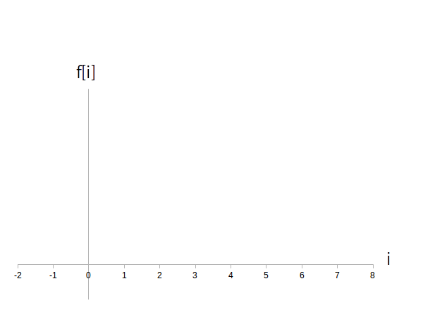
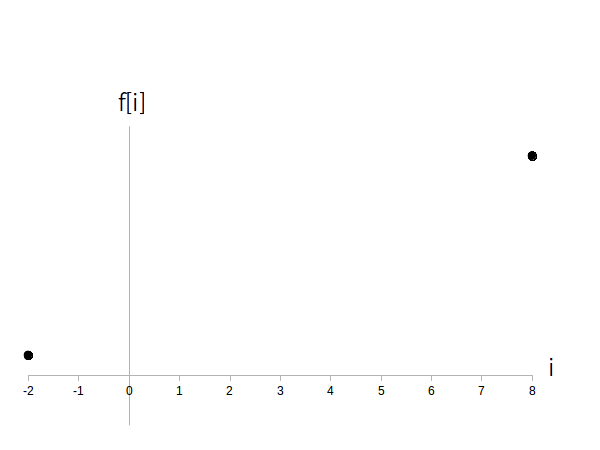
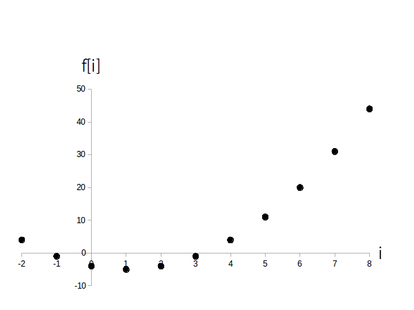
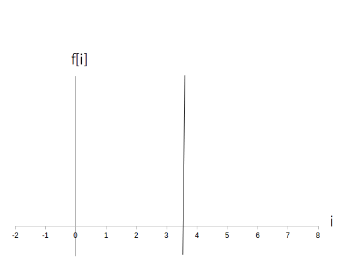

時間領域ディジタル信号は大規模サイズになることが多いので普通はコンピューターで計算してモニターに表示しますが、手描きの仕方を学ぶことも大事なのでここで勉強しておきましょう。
今回は具体例として $f[i]=(i-1)^2-5, \ (i = -2, -1, \cdots, 8)$ のグラフをステップ順に描いていきます。
初めに横軸を引き、横軸の右に $i$ と記入します。
それから横軸の左端に値域の最小値、右端に値域の最大値の数字を入れ、残りの整数を対応する場所に入れます。
次に縦軸を $i=0$ の所で横軸とクロスさせて引きます。
そこが原点になります。
もし $i=0$ が定義域に含まれていなければ右端、又は左端に縦軸を引きます。
そのあと縦軸の上に $f[i]$ と記入します。
なお $f[i]$ の値域はこの時点ではまだ分からないので縦軸にはまだ数値は入れません。 負の値があるかどうかも分からないので取り敢えず負の方向にも線を引っ張っておきます。
この時点では図1のようなグラフとなります。

次にグラフの左端、つまり値域の最小値に対応する $f[i]$ の値を計算して、左端の適当な位置に点を打ちます。
「適当な位置」と言われても困るかもしれませんが、$f[i]$の値域は現時点ではまだ分かりませんので、最初の点は適当な位置で構いません。
今回の例では $i$ の最小値は -2 で、$i=-2$ 時点における信号値は $f[-2] = (-2-1)^2-5 = 4$ ですので 図2 の様にします。

次に値域の最大値に対応する $f[i]$ の値を計算して右端に点を打ちます。
今回の例では $i$ の最大値は 8 なので、$i=8$ 時点における信号値は $f[8] = (8-1)^2-5 = 44$ となります。
ただし今回は適当な位置に点を打ってはいけません。
$f[-2] = 4$ でしたので、最初の点の高さの大体 11 倍位の高さの位置に点を打ちます(図3)。
もし縦軸の長さが足りなければ線を上に伸ばします。

次に時刻 $i=0$の時点に点を打ちます。
もし $i=0$ が定義域に含まれて無かったり、左端か右端が $i=0$ ならこのステップは飛ばして結構です。
今回の例では $f[0] = (0-1)^2-5 = -4$ ですので、対応する位置に点を打ちます(図4)。

同様に残りの点も入れます。
全ての点を入れ終えると値域が分かりますので、最後に縦軸にラベルの数字を記入して完成となります(図5)。
なおラベルの間隔は適当でも良いのですが、出来るだけ等間隔にした方が見やすくなります。

時間領域ディジタル信号では無いのですが、直線 $i=a$ ( $a$ は任意の実数)のグラフの描き方についてもついでですので説明しておきます。
この直線は単に時刻 $i=a$ の位置から上下垂直に線を引くだけで描けます。
この値は整数でなくても良いです。
例えば下の図 6 は直線 $i=3.5$ のグラフです。
